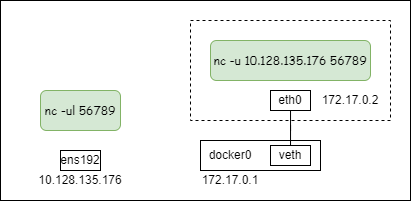
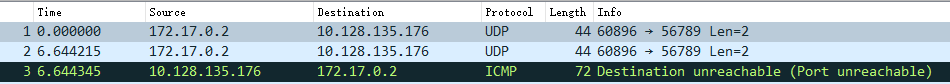
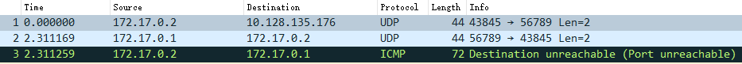

netcat udp模式无法通讯
1. 实验

# 宿主机（服务端）
$ nc -ul 56789
# 容器（客户端）
$ docker run -it apline sh
/ $ nc -u 10.128.135.176 56789
结果：
- 客户端可以成功发送第一个数据包；
- 客户端第二个数据包发送失败；
- 服务端向客户端发送数据包失败；
- 后续无法通讯；
2. 抓包
在 docker0 处的抓包结果：
客户端发送第一个包成功，客户端发送第二个包失败： 
客户端发送第一个包成功，服务端发送第一个包失败： 
3. 分析
这里产生了三个问题：
- 为什么服务端发送第一个包的源IP地址是docker0的IP？
- 为什么服务端回包会端口不可达？
- 为什么客户端第一个包能成功，发第二个包就失败？
3.1 为什么服务端发送第一个包的源IP地址是docker0的IP？
使用strace命令看下服务端系统调用，发现nc在收到包后，立即调用了 connect 函数：
recvfrom(3, "abcd\n", 2048, MSG_PEEK, {sa_family=AF_INET, sin_port=htons(57190), sin_addr=inet_addr("172.17.0.2")}, [128->16]) = 5
connect(3, {sa_family=AF_INET, sin_port=htons(57190), sin_addr=inet_addr("172.17.0.2")}, 16) = 0
看下udp协议的connect函数实现：
__ip4_datagram_connect
| ip_route_connect(...) // 根据"172.17.0.2"查路由
| inet->inet_saddr = fl4->saddr; /* Update source address */
| inet->inet_daddr = fl4->daddr;
| inet->inet_dport = usin->sin_port;
| sk->sk_state = TCP_ESTABLISHED;
从代码可以看到：查路由，设置sock的源IP地址，设置状态为TCP_ESTABLISHED。
这个变化从netstat命令也可以观察到：
# 未发包
udp 0 0 0.0.0.0:56789 0.0.0.0:* 3467509/nc
# 客户端发送第一个包后
udp 0 0 172.17.0.1:56789 172.17.0.2:45609 ESTABLISHED 3467509/nc
所以，第一个问题，源IP的修改是由于调用了connect函数，查路由对sock信息进行了更改。
3.2 为什么服务端回包会端口不可达？
客户端收到服务端回包后，走udp_rcv处理逻辑：
__udp4_lib_rcv
| sk = __udp4_lib_lookup
| udp4_lib_lookup2 /* Lookup connected or non-wildcard socket */
| udp4_lib_lookup2 /* Lookup wildcard sockets */
| if (sk) return udp_unicast_rcv_skb(sk, skb, uh);
| icmp_send(skb, ICMP_DEST_UNREACH, ICMP_PORT_UNREACH, 0);
从上面看，找不到sock，才会发送icmp端口不可达消息。
经历了两次查找，第一次根据 daddr 查套接字，第二次根据 INADDR_ANY 查套接字。
回想第一个问题，用strace可以看到客户端也调用了connect函数来修改了sock信息，所以这才是导致收包时匹配不到套接字的原因。
3.3 为什么客户端第一个包能成功，发第二个包就失败？
nc 服务端是先recvmsg，才调用connect函数，从第二个包开始就无法匹配到正确的sock了。
3.4 nc udp为什么要使用connect函数？
以下是我猜测：
udp是无连接的，netcat udp模式下，客户端和服务端都只接受一个对端。避免在测试中，其他数据包的干扰。